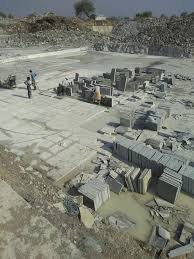
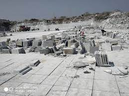

About my Hometown{TANDUR}
Tandur is a town, Municipality and Mandal in Vikarabad district in the Indian State of Telangana. It is a municipality consisting of 36 wards, as well as the headquarters of Tandur Mandal in the Tandur Revenue Division. It is known for its production of Limestone, Cement, and Redgram (Pigeon pea). Drinking water is sourced from the River Kagna, a tributary of the Bhima River, which is 4 km from the town. The country's famous Tandur Redgram (Pigeon pea) has been awarded the Geographical Indication (GI) by The Central Department of Commerce and Industry.
Specialty
It is known for its production of Limestone, Cement, and Redgram (Pigeon pea). Drinking water is sourced from the River Kagna, a tributary of the Bhima River, which is 4 km from the town.
Our production
Greyish blue in color, Tandur Blue limestone is a beautiful stone product quarried from South India. The pale white veins on the surface of Tandur Blue limestone surface significantly contribute to its antique looks.
Following Shows the page to buy the Stone
This is link 
| Stone Category 1 | Stone category 2 | |
|---|---|---|
| Lime stone | Polished&Unploished | |
| Blue Stone | Polished&Unpolished |
- Home Flooring
- Office site Essential
- Soft Finishing
- Rough Finishing